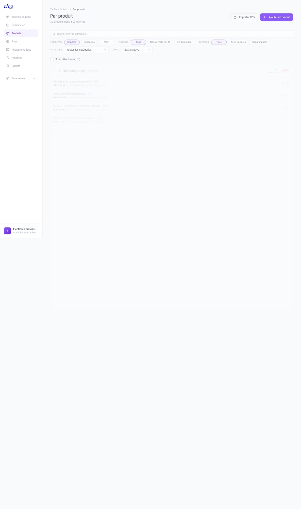
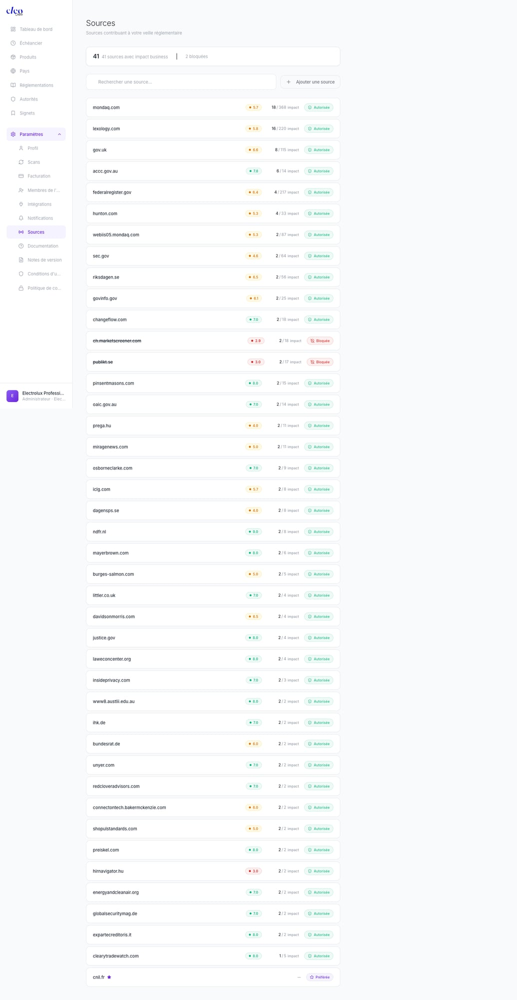

Qu'est-ce que Cleo Comply ?
Cleo Comply est une plateforme d'intelligence réglementaire alimentée par l'IA. Elle surveille plus de 800 réglementations dans plus de 100 pays, les croise avec vos produits et marchés, et vous dit exactement quoi faire — en langage clair, adapté à votre rôle.
Veille en temps réel
Scans automatisés des sources officielles — registres fédéraux, publications d'agences, journaux officiels.
Croisement produits × réglementations
Chaque signal est croisé avec vos produits et marchés spécifiques.
Intelligence adaptée au rôle
Résumés et plans d'action adaptés à votre fonction — DPO, responsable qualité, juriste.
Actions concrètes
Obligations juridiques, plans d'action, échéances et responsables — prêts à être exécutés.
pays couverts
réglementations dans la base
sources surveillées
autorités réglementaires indexées
textes analysés
🚀 Démarrage rapide
Soyez opérationnel en moins de 5 minutes.
1. Créez votre compte
Inscrivez-vous sur insight.cleolabs.co. On vous demandera le nom de votre organisation, votre département et votre rôle. Ces paramètres personnalisent votre expérience.
2. Ajoutez vos produits
Allez dans Produits et ajoutez votre catalogue. Vous pouvez ajouter des produits manuellement ou importer un CSV. Organisez-les en catégories (ex : Papeterie, Électronique, Textile).
3. Ajoutez vos marchés
Allez dans Pays et ajoutez chaque marché où vous vendez. Cleo commencera immédiatement à surveiller les réglementations locales.
4. Lancez votre premier scan
Cliquez sur le bouton Actualiser du tableau de bord. Cleo scannera toutes les sources officielles, analysera les résultats et les croisera avec vos produits et marchés.
5. Consultez votre tableau de bord
Votre tableau de bord affiche maintenant votre paysage réglementaire : nouveaux signaux, niveau d'exposition, prochaines échéances et produits impactés. Commencez par le filtre Critique.
💡 Concepts clés
| Concept | Définition |
|---|---|
| Signal | Un événement réglementaire qui impacte votre organisation — une nouvelle loi, une sanction, une mise à jour, un changement d'échéance. |
| Exposition | Votre niveau de risque global basé sur tous les signaux actifs, tous produits et marchés confondus. De Faible à Critique. |
| Impact | La sévérité d'un signal pour vos produits spécifiques. Critique → Élevé → Modéré → Faible. |
| Score | Un pourcentage de pertinence sur chaque signal — à quel point il vous concerne directement, basé sur votre profil. |
| Scan | Un balayage IA des sources officielles qui détecte les nouveaux événements réglementaires et met à jour les existants. |
| Source | Une publication officielle (registre gouvernemental, site d'agence) que Cleo surveille pour détecter les changements réglementaires. |
| Obligation | Une exigence juridique spécifique extraite d'une réglementation, avec références d'articles et statut de conformité. |
| Échéance | Une date d'entrée en vigueur à venir — affichée dans l'Échéancier avec un compte à rebours. |
📊 Tableau de bord
Le tableau de bord est votre cockpit quotidien. Il affiche votre paysage réglementaire en un coup d'œil et fait remonter ce qui nécessite votre attention.

Cartes KPI
Quatre indicateurs clés en haut :
- New — number of new regulatory signals since your last visit, with a trend sparkline
- Exposure — your global risk level (Low / Medium / High / Critical)
- Deadline — days until your next regulatory deadline, with the regulation name
- Regulations — total number of regulations being monitored for your organization
Filtres
Deux lignes de filtres vous permettent de découper votre fil de signaux :
- Impact — All, Critical, High, Medium, Low
- Status — All, In force, Adopted, Proposed
- Dropdowns — filter by product, country, law, category
Fil de signaux
Below the filters, a chronological feed of regulatory signals. Each card shows:
- A colored badge — Sanction (red), Recommendation (green), Analysis (grey)
- The regulation name and country flag
- A one-line summary of the event
- Number of impacted products and risk level
- A bookmark icon to save for later
Échéancier rapide
On the right sidebar, your next 5 regulatory deadlines with countdown badges. Click "View all" to open the full Timeline.
Actualiser
The Refresh button in the top-right triggers a new scan. Cleo scans all official sources, processes new documents, and updates your signals. Each refresh consumes scan credits.
📋 Fiche signal
Click any signal to open its full card. This is where all the intelligence concentrates — the analysis that would normally take hours is done for you.

En-tête
The signal type badge, regulation name, country flag, relevance score (percentage), and risk level. In two seconds you know if it's urgent.
Résumé adapté au rôle
This summary is personalized to your role. A DPO sees a data protection angle. A product quality manager sees a safety and compliance angle. A legal counsel sees a liability angle. Same event, different perspective — based on your Profile settings.
Analyse d'impact
Different from the summary: while the summary explains what happened in the world, the impact analysis explains why it matters for your company. It connects the regulatory event to your specific business context.
Produits impactés
On the right panel, the specific products from your catalog that are affected. Not generic categories — your actual products, cross-referenced automatically.
Obligations
Extracted legal obligations with:
- The exact legal article reference (section, paragraph)
- A plain-language description of what's required
- Responsible party assignment
- A checkbox for compliance tracking
Plan d'action
Concrete actions with urgency indicators, deadlines, responsible parties, legal references, and impacted products. Ready to copy into an email or a project management tool.
Source & Feedback
A direct link to the original source document, plus a thumbs up/down feedback button. Your feedback improves future signal relevance.
📦 Produits
The Products page is your portfolio view. Add your catalog and see, at a glance, which products concentrate the most regulatory risk.

Ajouter des produits
- Manual — click "+ Add a product", enter name, category, and markets
- CSV Import — bulk upload your entire catalog
- AI-discovered — Cleo automatically detects products mentioned in signals and suggests them
Catégories
Products are organized in collapsible categories. Each category shows the total impact count and critical impact count. Expand to see individual products.
Indicateurs d'impact
- Impact count — total regulatory signals affecting the product
- Red badge — number of critical impacts
- Red bar — proportional visual indicator; longer bar = more risk
Filtres
- Sort by — Coverage, Impacts, Deadline, Name
- Source — All, AI-discovered, Custom
- Impacts — All, With impacts, Without impacts
- Category and Country dropdowns
📅 Échéancier
Your regulatory calendar. A vertical timeline showing every upcoming enforcement date, deadline, and regulatory milestone.

Lire l'échéancier
- The "Today" marker shows your current position
- Events are grouped by month
- Each event shows the exact date, a "X days remaining" countdown (color-coded by urgency), the event title, and the associated regulation
Filtre horizon
Control your time window: 30 days, 90 days, 6 months, or All.
Filtre risque
Combine with the risk filter — Critical, High, Medium, Low — to focus on what matters.
Additional Filters
Refine by regulation, product, country, or use the search bar to find a specific deadline.
🌍 Pays
Tell Cleo where you sell, and it monitors local regulations automatically.
Carte mondiale
A color-coded exposure map: red = critical exposure, orange = high, grey = not monitored. Below the map: total monitored countries and critical impact count.
Ajouter des marchés
- Click "+ Add a country" — select from the list, monitoring starts immediately
- CSV Import for bulk additions
Découpage régional
Some entries expand into sub-regions:
- European Union expands into individual member states — each with its own transposition specifics
- United States expands by state — critical because state-level regulations (like California Prop 65) can be stricter than federal
Filtres
Region (Europe, Americas, APAC, Africa-Middle East), Impacts (With/Without), and Product dropdown.
⚖️ Réglementations
800+ regulations already in the database, automatically enriched by AI.

Entrées réglementaires
For each regulation:
- Name and AI badge (confirming automatic enrichment)
- Jurisdiction — country or region
- Authority — the enforcing body
- Risk level — Critical, High, Moderate, Low
- Impact count — how many of your products are affected
- Priority — Standard or Enhanced surveillance
Priorité de surveillance
Set key regulations to Enhanced surveillance. These are scanned more frequently and their signals are prioritized in your feed.
Ajouter des réglementations
Click "+ Add a regulation" to add any regulation not already in the library. Cleo will automatically enrich it with authority, jurisdiction, status, and related obligations.
👤 Profil
Your profile is the #1 setting to configure correctly. It determines how every signal summary and impact analysis is written.
Département & Rôle
Select your department (Legal, Compliance, Quality, Product, etc.) and your specific role (DPO, Quality Manager, Legal Counsel, etc.). All role-based summaries and action plans in signal cards are generated based on these settings.
🔍 Sources
Control where Cleo gets its intelligence. Each source has a quality score and can be managed individually.

Sources découvertes
Cleo automatically discovers relevant sources — government registers, agency publications, official journals. For each source:
- Domain — e.g., federalregister.gov, eur-lex.europa.eu
- Quality score — reliability rating out of 10
- Article count — how many articles it has contributed
- Status — Authorized (green) or Blocked
Bloquer des sources
Click on any source to change its status to "Blocked". Cleo will stop using it in future analyses.
Sources préférées
Add trusted domains as preferred sources. These are prioritized in every scan — their articles are processed first and weighted higher in analysis.
👥 Équipe
Invite team members to collaborate on regulatory intelligence.

Offres
| Plan | Team Members | Features |
|---|---|---|
| Free | 1 | Basic monitoring, Sources page |
| Pro | Up to 5 | Enhanced scanning, team management, integrations |
| Enterprise | Unlimited | Custom onboarding, API access, dedicated support |
Each team member gets their own profile with department and role settings, meaning they receive personalized summaries adapted to their function.
⚡ Scans & Crédits
Every time you refresh your dashboard, Cleo runs a scan that consumes credits.
Fonctionnement des crédits
- Each Refresh consumes credits based on the scope of the scan
- Pro plan includes 5,000 credits/month
- Purchased credits don't expire
- Credit usage history is visible in the Scans settings page
File d'attente
You can launch multiple scans simultaneously — they're automatically queued with retry on failure. Your workflow is never blocked.
Historique de refresh
Automatic refresh looks back up to 90 days, so no recent regulatory change is missed.
🔔 Notifications
Configure how and when Cleo alerts you.
Types d'alertes
- Critical alerts — immediate notification for Critical-level signals
- Weekly digest — a summary of the week's regulatory activity
- Deadline reminders — advance notice before upcoming enforcement dates
Intégrations
Connect Slack to receive alerts directly in a channel. Configure which alert types go where.
💳 Offres & Facturation
| Feature | Free | Pro | Enterprise |
|---|---|---|---|
| Regulations monitored | 832+ | 832+ | 832+ |
| Products | Limited | Unlimited | Unlimited |
| Team members | 1 | Up to 5 | Unlimited |
| Scan credits | 500/mo | 5,000/mo | Custom |
| Sources management | View only | Full control | Full control |
| Integrations | — | Slack | Slack, API, Custom |
| Priority support | — | Dedicated CSM |
❓ FAQ
How often are sources scanned?
Sources are scanned when you click Refresh. The platform checks official publications, government registers, and agency websites. Enhanced surveillance regulations are scanned more frequently.
Can I add regulations that aren't in the library?
Yes. Click "+ Add a regulation" on the Regulations page. Cleo will automatically enrich it with authority, jurisdiction, status, and related obligations.
How are role-based summaries generated?
Summaries are AI-generated based on your Department and Role in your Profile settings. The same regulatory event produces different summaries for a DPO vs. a Quality Manager vs. a Legal Counsel.
What happens when I add a new country?
Cleo immediately starts monitoring local regulations for that market and cross-references them with your product catalog. New signals will appear on your next refresh.
Do purchased credits expire?
No. Credits purchased beyond your monthly allocation never expire.
Can I export data?
Products and countries support CSV import. Signal cards can be shared or bookmarked for later reference.
📝 Changelog
Latest updates to Cleo Comply.
Mars 2026
Nouveautés
- Priority sources — define preferred sources with priority ordering for your scans
- Score breakdown — detailed severity and probability explanation behind each compliance score
- Key obligations & products in enrichment — regulation profiles now include key obligations and applicable products
- Scan queue — launch multiple scans simultaneously with automatic queuing and retry
- Sources page for Free plan — free plan users can now view and configure their regulatory intelligence sources
Améliorations
- Pro plan now supports up to 5 team members
- Refresh history extended to 90 days (was 30)
- Score tooltip now shows full explanation text
- Scan progress indicator reflects real operation progress
Corrections
- Fixed authentication redirect loop
- Fixed stuck/duplicate scans
- Fixed translation errors on long regulatory articles
- Extended translation timeout to 180s with automatic retry
- Fixed pipeline failure on worker timeout
- Fixed page regeneration polling metadata
- Adjusted Bedrock concurrency to stay within TPM quotas